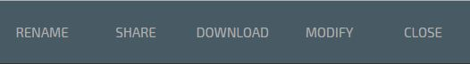
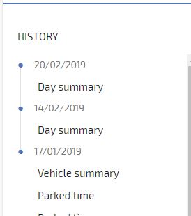
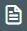
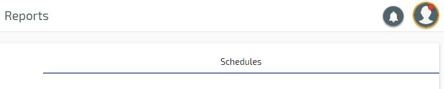

Reports¶
Run a Report¶
Select Reports from the main menu
{kind=link}
Choose the report you wish to run
Select the assets to run the report for, or select All
Select the To and From dates
Enter an email address if you wish to have the report emailed.
Click the tick in the blue circle to run the report
Once the report has been run you have the option to print the report by clicking the below
You can also Export to CSV, Copy Link or Send By Email, or rename the report, these options are shown at the top of the report to the left

Reports you have run are stored in the ‘History’ section so they can be viewed without having to run the same report again

Create Scheduled Report¶
Select Reports from the main menu

Click Schedules

Click ‘ + ’ in bottom right corner which will open the Report Schedule Module Window
Choose Type – Once, Daily, Weekly, Monthly
Choose the report you wish to setup – Journey Summary, Parked Time etc
Select the assets you wish to include in the scheduled report
Enter the email addresses you wish to send the reports to
Select report format – PDF, HTML, CSV
To finish click ‘Save’
Click ‘ + ’ in bottom right corner which will open the Report Schedule Module Window
Choose Type – Once, Daily, Weekly, Monthly
Choose the report you wish to setup – Journey Summary, Parked Time etc
Select the assets you wish to include in the scheduled report
Enter the email addresses you wish to send the reports to
Select report format – PDF, HTML, CSV
To finish click ‘Save’
View Scheduled Reports¶
Select Reports
Click Report Schedules
Edit Scheduled Reports¶
Select Reports
Click Report Schedules
Select the report you wish to edit
Edit the feature you want to change
To finish click ‘Save’